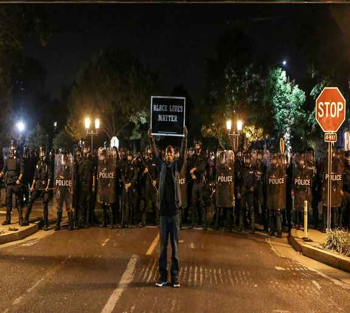
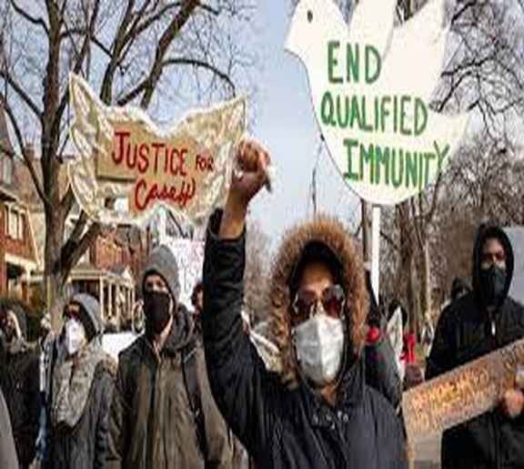
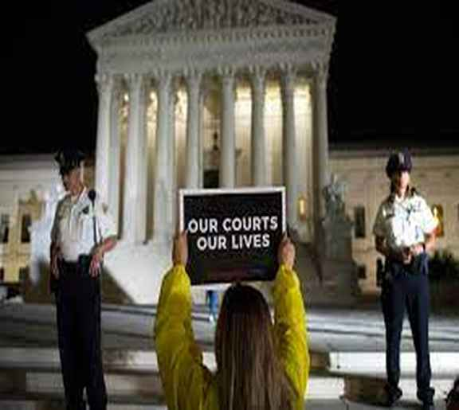

Publications and Current Projects
Current Projects
How Judges Determine When Police Violence is Constitutionally Permissible
How Judges Decide When Officials Receive Qualified Immunity for Civil Rights Violations
How Institutional Design Impacts Marginalized Group Representation on Courts



Publications
Books
Judicial Merit Selection: Institutional Design and Performance for State Courts
Philadelphia: Temple University Press (2019)
Choosing State Supreme Court Justices: Merit Selection and the Consequences of Institutional Reform
Philadelphia: Temple University Press (2016)
Articles
Measuring Supreme Court Case Complexity
Journal of Law, Economics, and Organization (forthcoming)
[Coauthored with Benjamin Kassow and Douglas Rice]
Selecting Chief Justices by Peer Vote
State Politics and Policy Quarterly (2021)
[Coauthored with former USU undergraduates Madelyn Fife and Stephen Loertscher]
The State of American Federalism 2019-2020: Polarized and Punitive Intergovernmental Relations
Publius: The Journal of Federalism [special issue] (2020)
[Coauthored with David Konisky]
Congressional Responses to the Supreme Court's Statutory and Constitutional Decisions
Justice System Journal (2019)
[Coauthored with Bethany Blackstone]
The State of American Federalism 2018-2019: Litigation, State Opposition, and the Administrative Presidency
Publius: The Journal of Federalism [special issue] (2019)
[Coauthored with David Konisky]
Does Merit Selection Work? Evidence from Commission and Gubernatorial Choices
Journal of Law and Courts (2018)
Classifying Judicial Selection Institutions
State Politics and Policy Quarterly (2018)
The State of American Federalism 2017-2018: Unilateral Executive Action, Regulatory Rollback, and State Resistance
Publius: The Journal of Federalism [special issue] (2018)
[Coauthored with Shanna Rose]
Concurring and Dissenting without Opinion
Journal of Supreme Court History (2017)
[Coauthored with Nicole Vouvalis and former USU undergraduates Madelyn Fife and Kaylee Hodgson]
The State of American Federalism 2016-2017: Policy Reversals and Partisan Perspectives on Intergovernmental Relations
Publius: The Journal of Federalism [special issue] (2017)
[Coauthored with Shanna Rose]
Silent Concurrences
Constitutional Commentary (2016)
Graveyard Dissents on the Burger Court
Journal of Supreme Court History (2015)
Silent Acquiescence on the Supreme Court
Justice System Journal (2015)
Justice Blackmun's Blood Oath
Green Bag 2d (2015)
Amicus Coalition Heterogeneity and Signaling Credibility in Supreme Court Agenda Setting
Publius: The Journal of Federalism (2015)
[Coauthored with Nicole Vouvalis]
The Political Geography of Plea Bargaining in Federal Death Penalty Cases
New Mexico Law Review [symposium] (2015)
Judicial Independence and Opinion Clarity on State Supreme Courts
State Politics and Policy Quarterly (2014)
[Coauthored with Damon Cann]
Analyzing Text Complexity in Political Science Research
PS: Political Science and Politics (2014)
[Coauthored with Damon Cann and former USU undergraduate Kaylee Johnson]
Presidential Rhetoric Toward the Supreme Court
Judicature (2014)
[Coauthored with Bethany Blackstone]
State Coordinating Institutions and Agenda Setting on the U.S. Supreme Court
American Politics Research (2013)
[Coauthored with Nicole Vouvalis]
Prosecutorial Discretion Under Resource Constraints: Budget Allocations and Local Death-Charging Decisions
Judicature (2014)
Accountability and Judicial Performance: Evidence from Case Dispositions
Justice System Journal (2012)
Avoiding Constitutional Cases
American Politics Research (2011)
Diversifying State Supreme Courts
Law and Society Review (2011)
Price Squeeze in a Deregulated Electric Power Industry
Florida State University Law Review [student comment] (2004)
Book Chapters
Taft, Van Devanter, and the Summer of 1922
In Green Bag Almanac and Reader [reprinted in the Journal of Law] (2021)
[Edited by Ross Davies]
Intersectional Representation on State Supreme Courts
In Open Judicial Politics, Oregon State University Press (2020)
[Edited by Rorie Spill Solberg, Jennifer Segal Diascro, and Eric Waltenburg]